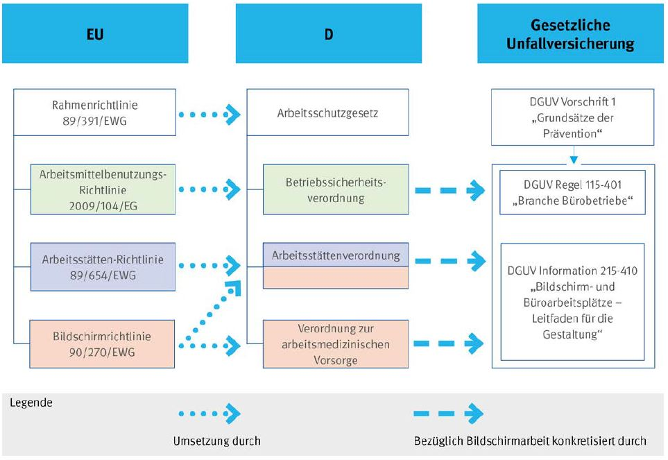

Dieser Leitfaden bietet praktische Hilfen für die Gestaltung der Arbeit an Bildschirm- und Büroarbeitsplätzen in Form einer DGUV Information.
DGUV Informationen sind Zusammenstellungen von Inhalten aus
Dieser Leitfaden konkretisiert die sicherheitstechnischen, arbeitsmedizinischen, ergonomischen und arbeitspsychologischen Anforderungen für die Gestaltung und den Betrieb von Bildschirm- und Büroarbeitsplätzen. Die Gestaltungskriterien können auch auf weitere Arbeitsplätze angewendet werden.
Die Unternehmen können bei Beachtung der hier wiedergegebenen Informationen davon ausgehen, dass die Anforderungen und Schutzziele der Arbeitsstättenverordnung in Bezug auf Bildschirmarbeit eingehalten beziehungsweise erreicht und damit arbeitsbedingte Gesundheitsgefahren und Unfälle vermieden werden. Die hier beschriebenen Lösungen schließen andere mindestens ebenso sichere Lösungen nicht aus.
Anforderungen weiterer gesetzlicher Vorgaben (Arbeitsstättenregeln, Verordnung zur arbeitsmedizinischen Vorsorge) werden hier berücksichtigt. Allerdings sind gegebenenfalls noch aktuellere und weitergehende gesetzliche Vorgaben oder Regelungen als hier dargestellt zu beachten.
Der Leitfaden umfasst auch die aktuellen arbeitswissenschaftlichen Erkenntnisse der Bundesanstalt für Arbeitsschutz und Arbeitsmedizin (BAuA).
Maßnahmen zur Verbesserung des Arbeitsschutzes sind im Gesetz über die Durchführung von Maßnahmen des Arbeitsschutzes zur Verbesserung der Sicherheit und des Gesundheitsschutzes der Beschäftigten bei der Arbeit (Arbeitsschutzgesetz) geregelt. Dieses Gesetz ist die nationale Umsetzung der Richtlinie des Rates vom 12. Juni 1989 über die Durchführung von Maßnahmen zur Verbesserung der Sicherheit und des Gesundheitsschutzes der Arbeitnehmer bei der Arbeit (89/391/EWG). Auf der Basis von § 18 des Arbeitsschutzgesetzes ist die novellierte Verordnung über Arbeitsstätten (Arbeitsstättenverordnung) am 3. Dezember 2016 in Kraft getreten.
Da die bisherige Bildschirmarbeitsverordnung in die novellierte Arbeitsstättenverordnung integriert wurde, trat die Bildschirmarbeitsverordnung am 3. Dezember 2016 außer Kraft. Damit setzt die Arbeitsstättenverordnung zusammen mit der Verordnung zur arbeitsmedizinischen Vorsorge (ArbMedVV) die Richtlinie des Rates vom 29. Mai 1990 über die Mindestvorschriften bezüglich der Sicherheit und des Gesundheitsschutzes bei der Arbeit an Bildschirmgeräten (90/270/EWG) in das nationale Recht der Bundesrepublik Deutschland um.
Für die Bereitstellung von Arbeitsmitteln und deren Benutzung ist außerdem die Verordnung über Sicherheit und Gesundheitsschutz bei der Verwendung von Arbeitsmitteln (Betriebssicherheitsverordnung) zu beachten (Abbildung 1).
Die Grundlage zur Anwendung des staatlichen Arbeitsschutzrechts in DGUV Vorschriften bildet die DGUV Vorschrift 1 "Grundsätze der Prävention". Dabei nimmt die DGUV 1 über § 2 "Grundpflichten des Unternehmers" die Bildschirmarbeitsverordnung direkt in Bezug (siehe Abschnitt 3).
Diese Informationsschrift beschäftigt sich mit der Konkretisierung der Arbeitsstättenverordnung in Bezug auf Bildschirmarbeit in Büros.
Jeder Bildschirm- und Büroarbeitsplatz muss – unabhängig von der Dauer und Intensität der Nutzung – die sicherheitstechnischen und ergonomischen Anforderungen der Arbeitsstättenverordnung erfüllen.
Dieser Leitfaden enthält Handlungsanleitungen, die beschreiben, wie die allgemein gehaltenen Schutzziele der Arbeitsstättenverordnung in Bezug auf Bildschirmarbeit umgesetzt werden können.
Die im Text und in den Literaturangaben zitierten Normen gelten in der jeweils aktuellen Fassung (inklusive Änderungen, Berichtigungen und Beiblätter).
Der vorliegende Leitfaden entstand in Zusammenarbeit mit der Bundesanstalt für Arbeitsschutz und Arbeitsmedizin (BAuA).

Abb. 1 Rechtliche Grundlagen